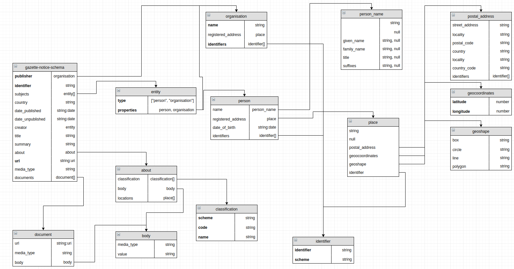

Oznámení na úředních deskách
Draft 2017-12-19
Plný model

Základ modelu je jedna zpráva na úřední desce: Oznámení na úřední desce
Submodely
Praktická implementace může použít skoro libovolný submodel z plného modelu. Povinné jsou pouze organizace(úřední deska) a url.
V případě, že implementace používá prvky z plného modelu, měly by se jmenovat tak, jak jsou popsány v modelu.
V implementaci je možné použít i další vlastní prvky, které nejsou popsány v plném modelu.
Specifikace pomocí JSON-LD
Specifikace pomocí XSD
TBD **
Serializace do CSV
Při použití formátu CSV se doporučuje použít CSV on the web
Příklady
Pozn.: více příkladů přímo u jednotlivých prvků.
JSON
{
"zverejneno_od": "2017-11-04",
"url": "https://www.msk.cz/cz/verejna_sprava/dotacni-program-podpora-podnikani-v-moravskoslezskem-kraji-2017-92988/",
"organizace": {
"ico": "00258245"
},
"zverejneno_do": "2017-11-24",
"nazev": "Rekonstrukce betonárny Šenov"
}
CSV
zverejneno_od,url,organizace_ico,zverejneno_do,nazev
2017-11-04,https://www.msk.cz/cz/verejna_sprava/dotacni-program-podpora-podnikani-v-moravskoslezskem-kraji-2017-92988/,00258245,2017-11-24,Rekonstrukce betonárny Šenov